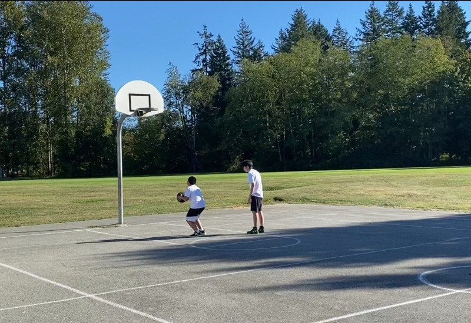
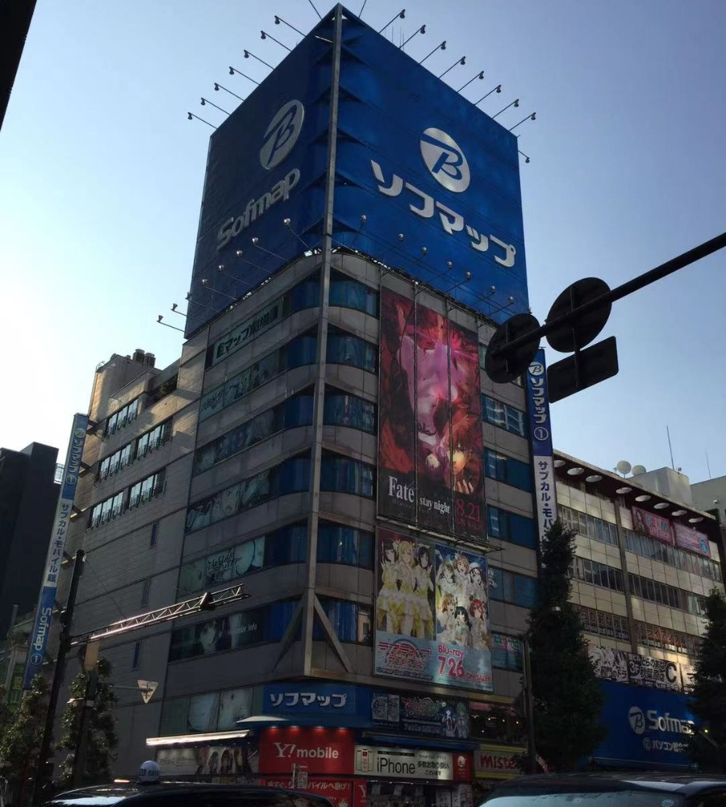

I was born and raised in Shanghai (amazing city that you
should probably visit if
you haven't yet). My family and I immigrated to Vancouver while I was in grade 6.
I am currently an software
engineering undergraduate student at University of Waterloo.
Besides school and work, I probably spend 50% of my leisure time gaming. I have wasted around 2000hrs
in
DOTA2,
written some small mods for Terraria. I am on Cyberpunk and Chinese RPG games recently. I'll have my
stream
id in contacts, feel free to add me.
Basketball is probably the only sport I kinda play. This was my "personal" court (just an elementary
school basketball court besides my house). Good memories. Still hit it up everytime when I go home during
the breaks.

Right now I am also working on my broken Japanese. I have been to Japan for a couple of times, definitely my
favorite country.
I used to think I could just speak Japanese since I watched a lot of anime. Well, it was true to come
extent, I really could speak ANIME Japanese, untill I figured out nobody speaks like that.
So yeah, I got myself some books, and learning actual Japanese is just something I m trying to practice
a little everyday.
